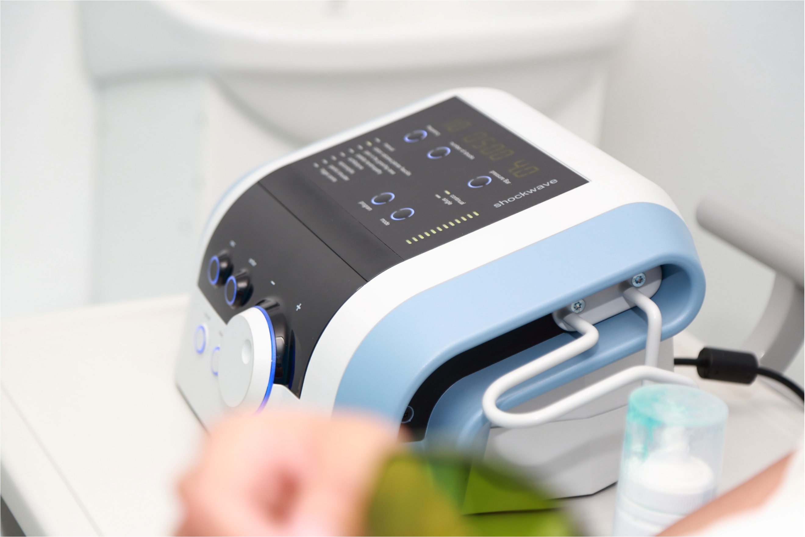

Terapia de Ondas de Choque
Electrólisis Percutánea Terapéutica Ecoguiada

Neuromodulación

Láser de Alta Intensidad

La electrólisis percutánea terapéutica es una técnica de fisioterapia invasiva que consiste en la aplicación de corriente continua galvánica a través de una aguja de punción que actúa como electrodo negativo (cátodo). Esto provoca una reacción electroquímica en la región afectada, que consiste en la ablación electroquímica no térmica y local que induce la necrosis celular mediante una reacción electrolítica producida por el flujo catódico. Este proceso genera en el tejido blando una inflamación local, permitiendo la fagocitosis y la reparación del tejido afectado.
¿Cuáles son las indicaciones?
Tendinopatías crónicas (tendinitis-tendinosis rotuliana, aquilea, isquiotibiales, pubalgias, epicondilitis, supraespinoso-manguito rotador).
Fascitis plantar.
Roturas musculares agudas y crónicas.
Puntos Gatillos Miofasciales.
Esguince crónico de tobillo.
La neuromodulación es un tratamiento eficaz en pacientes con dolor crónico de diversas etiologías. Este tratamiento utiliza la estimulación eléctrica para modular la actividad del sistema nervioso y aliviar el dolor. Es una terapia no invasiva que puede ser aplicada en diferentes partes del cuerpo según las necesidades del paciente.
Beneficios de la Neuromodulación:
Reducción del dolor crónico.
Mejora de la función y calidad de vida.
Tratamiento no invasivo.
Procedimiento seguro y controlado.
El láser de alta intensidad es una tecnología avanzada en fisioterapia que utiliza luz láser para tratar lesiones y aliviar el dolor. La energía del láser penetra en los tejidos y promueve la curación, reduciendo la inflamación y el dolor.
Beneficios del Láser de Alta Intensidad:
Reducción del dolor y la inflamación.
Estimulación de la regeneración celular.
Mejora en la movilidad y función.
Tratamiento rápido y efectivo.